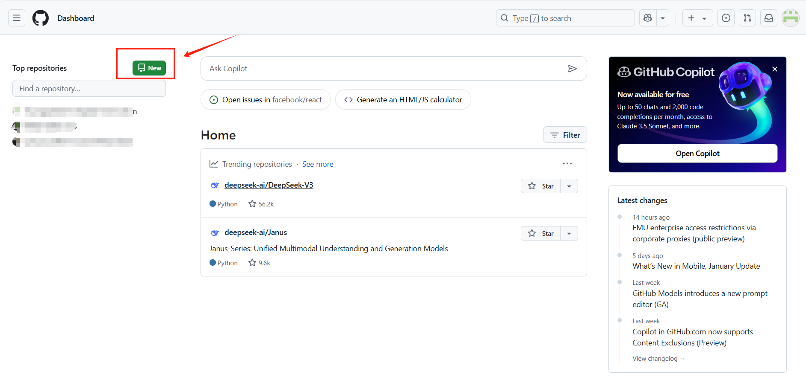
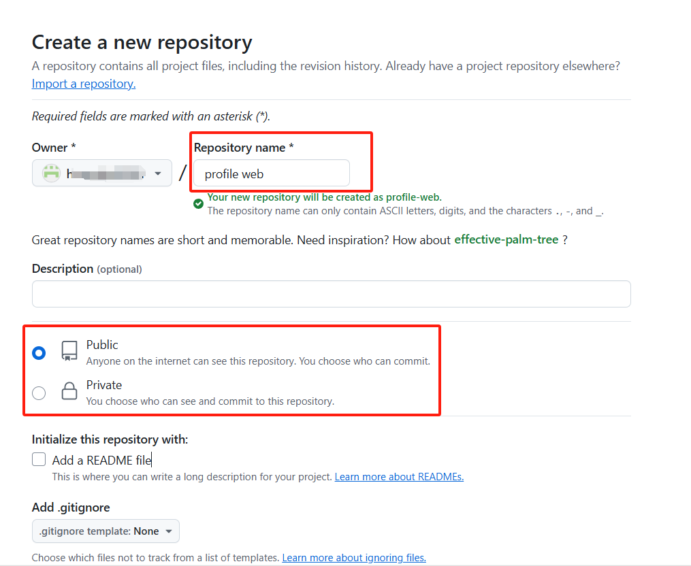
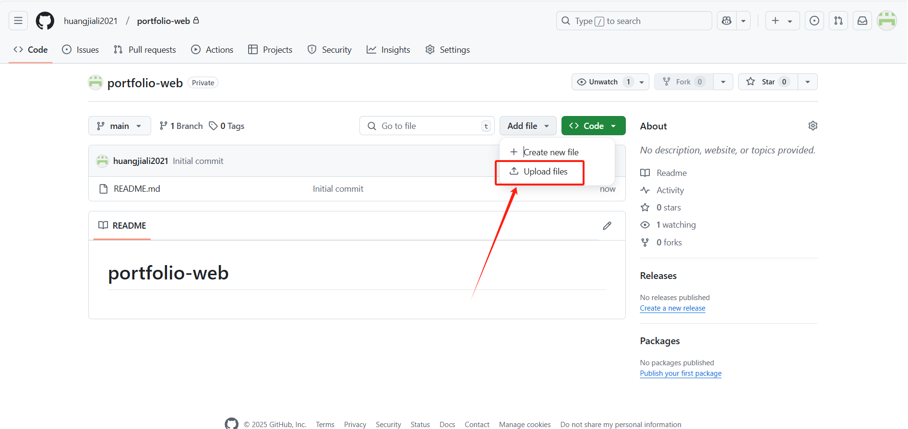
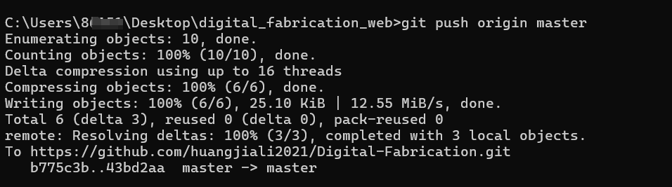
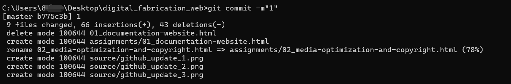
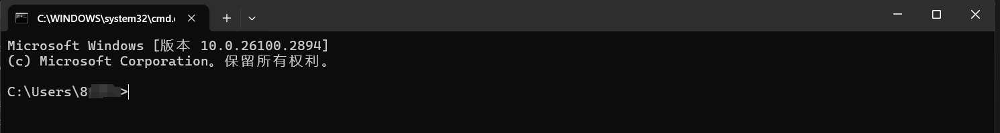
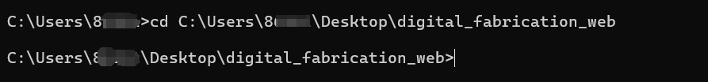
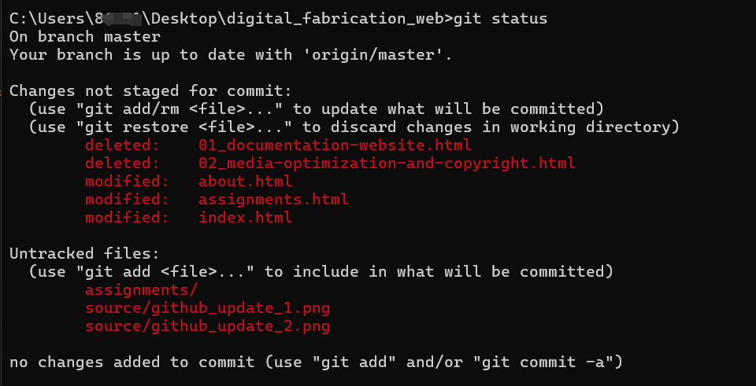

I have learned HTML, CSS, and JavaScript to build websites and use GitHub for uploading.
Visual Studio Code
VS code can handl different programming formats. So I can write Python/JAVA/JS/HTML and more in one program.
Github Upload
- Open the GitHub website and log in.
-
Add a new repository.
 -
Fill in the repository name and select the public or private repository. (also can add a description and REAMDME file)
 -
Upload files on the GitHub webpage or open the command line window and direct to the project directory.
 -
Add git init to initiate the git repository.
 - Add git remote add origin https://github.com/your-username/your-repository.git to connect the local repository to the GitHub repository.
- Add git add . to add the file to the staging area.
-
Add git commit -m"my upload description" to commit the file.
 - Add git push -u origin masterto upload the file to the GitHub repository. (check the default branch name is master or main)
Create a new GitHub repository
Upload files to the repository
Github Update
-
Use hotkey Win+R to open the run window, enter cmd to open the command line window.
 -
Add cd my_project_directory to enter the project directory.
 -
Add git status to check the status of the project (whether there are any changes or unuploaded files).
 - Add git add . to add the file to the staging area.
-
Add git commit -m"my upload description" to commit the file.
-
Add git push origin master to upload the file to the GitHub repository. (check the default branch name is master or main)